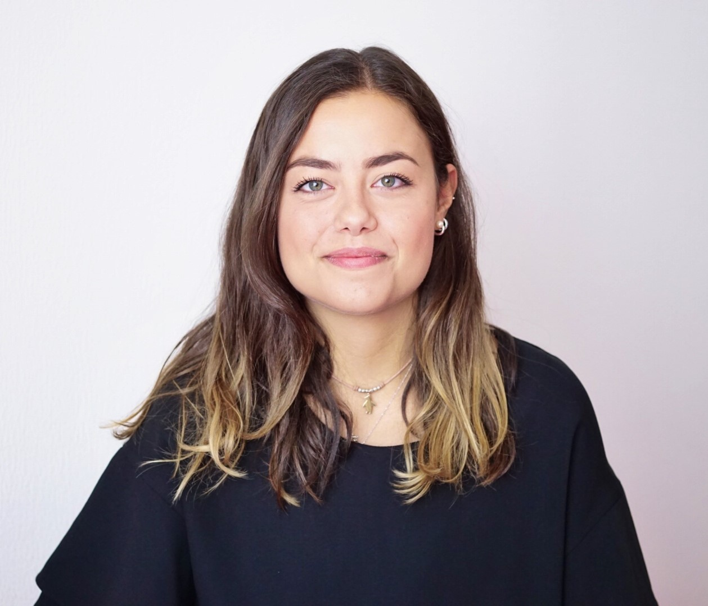

About Me
Hi there! I am Margherita and I am a software developer. I chose Biomedical Engineering and Neuroengineering as my degree courses, because I've always been very interested in every aspect of the human brain. I'm fascinated by its incredible complexity. This course of study opened the doors to programming which I immediately fell in love with. In my professional experience I have a great deal of initiative, determination, and I'm very meticulous and precise in my job duties. I'm constantly looking for new challenges, therefore I love a dynamic and varied environment to work in. No matter where I work, I always make time to improve my knowledge and skill set. In these last few years, I understood that the important thing in my job is being happy and satisfied about what I do every day and being excited about what will happen tomorrow.
Passions
Pass over each image to know more about my passions:
I've played basketball for 13 years, since I was 9. I've learnt during these years what being part of a team really means and how the defeats are responsibility of all the team members. These skills allowed me to understand how to work in a team in all my jobs trying always to do my best to achieve the common success.
I always suffered of vertigo but in 2020 I decided to try this sport in London and I immediately fell in love with it. I've learnt to fight my fears trying to push myself to the limits. I've understood that even when I'm feeble and after many falls my perserverance can bring me to reach the final hold.
I love taking pictures of people, their looks and smirks and of landscapes. I love particularly the details, and in this regard my favorite subject is the moon, in its every shape. The photography drives me to be creative. Check my pictures here!
I love the sea and its nature. One of the most bautiful things is being rocked by the waves and in harmony with their movement. I have an adventurous spirit and thanks to the sup I've explored many places in my beautiful home land.
I have a chihuahua, his name is Snoopy, he is very sweet and cuddly. I always take care of him, I know when everything is okay or if something is wrong. Thanks to him, I've learnt how to be totally responsible for another being and the real meaning of being love with no limits.
Pass over him!